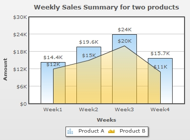
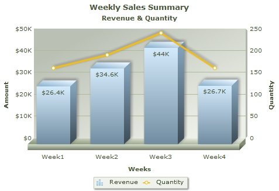

| Creating your First Combination Chart | |||||||||||||||
|
In the previous example, we have seen sales comparison of two products using Multi-Series and Stacked charts. You might want to plot the data of individual products using different chart types on the same canvas. For example, the sales for Product A as Column chart and the sales for Product B as Area chart . In this example, we will see how to combine these two different charts into one canvas and represent the data. For this we will use a Combination chart. We will use the same Sales comparison data for two products. The chart will look as under:  |
|||||||||||||||
|
The data for the above chart is as under: (saved as CombiData.xml) | |||||||||||||||
<chart caption='Weekly Sales Summary for two Products' xAxisName='Weeks' yAxisName='Amount' numberPrefix='$'> <categories> <category Label="Week1"/> <category Label="Week2"/> <category Label="Week3"/> <category Label="Week4"/> </categories> <dataset seriesName="Product A"> <set value='14400' /> <set value='19600' /> <set value='24000' /> <set value='15700' /> </dataset> <dataset seriesName="Product B" renderAs='Area'> <set value='12000' /> <set value='15000' /> <set value='20000' /> <set value='11000' /> </dataset> </chart> |
|||||||||||||||
| The above data is same as that of the multi-series data. The only change made is in the second <dataset> element. A new attribute renderAs='area' is included. This allows the chart to render the dataplot as Area. If nothing is specified, as for the dataset of Product A, Column chart will be plotted. For more details on this XML structure, please go through FusionCharts XT Data Format > XML > Combination Chart page. | |||||||||||||||
| In the HTML file we have changed the name of the SWF file from MSColumn3D.swf to MSCombi2D.swf. You need to copy MSCombi2D.swf file from Charts folder of the Download Pack. The HTML code to render the following data is as under: |
|||||||||||||||
<html>
<head>
<title>My First chart using FusionCharts XT</title>
<script type="text/javascript" src="FusionCharts/FusionCharts.js">
</script>
</head>
<body>
<div id="chartContainer">FusionCharts XT will load here!</div>
<script type="text/javascript"><!--
var myChart = new FusionCharts( "FusionCharts/MSCombi2D.swf ",
"myChartId", "400", "300", "0" );
myChart.setXMLUrl("CombiData.xml");
myChart.render("chartContainer");
// -->
</script>
</body>
</html>
| |||||||||||||||
| Creating Combination chart using Data with multiple units | |||||||||||||||
Now, we want to show a combination of weekly sales comparison along with total quantity of products sold in four weeks. The number of products sold will be represented by a line chart. The line chart will be plotted on the secondary axis with a different unit appearing on the right side of the chart. Here, we will need to use a Dual Y Axis chart. The chart will look as under: Follow the steps below to create a combination chart:
Open the file combi-weekly-sales-quantity.html in a Web browser and you will see an animated Combination chart similar to the one below: See it live! Code examples discussed in this section are present in Download Package > Code > MyFirstChart folder. What happens if Flash player is not available? |
|||||||||||||||
| Troubleshooting | |||||||||||||||
If for any reason, you do not see a chart, run through the following checks: If you see an endless loading progress bar in your browser, or if the right click menu (right click at the place where the chart is supposed to be) shows "Movie not loaded", check the following:
If you get an "Error in Loading Data" message, check the following:
If you get an "Invalid XML Data" message, it means that the XML data document is malformed. Check it again for common errors like:
To check whether your final XML is correct, open it in your browser and you will see the error. If only the text "FusionCharts XT will load here!" is displayed, check with the following:
|